에너지관리기사 (2015-05-31 기출문제)
1과목: 연소공학
1. 연소로에서의 흡출(吸出)통풍에 대한 설명으로 틀린 것은?
- 로안은 항상 부압(-)으로 유지된다.
- 흡출기로 배기가스를 방출하므로 연돌의 높이에 관계없이 연소할 수 있다.
- 고온가스에 대한 송풍기의 재질이 견딜 수 있어야 한다.
- 가열 연소용 공기를 사용하며 경제적이다.
(정답률: 47%)

2. 탄소 1kg을 완전히 연소시키는데 요구되는 이론산소량은?
- 약 0.82Nm3/kg
- 약 1.23Nm3/kg
- 약 1.87Nm3/kg
- 약 2.45Nm3/kg
(정답률: 68%)
3. 순수한 탄소 1kg을 이론공기량으로 완전 연소시켜서 나오는 연소 가스량은?
- 약 8.89Nm3/kg
- 약 10.593Nm3/kg
- 약 12.89Nm3/kg
- 약 14.59Nm3/kg
(정답률: 70%)
4. 인화점이 50℃ 이상인 원유, 경유 등에 사용되는 인화점 시험방법으로 가장 적절한 것은?
- 태그밀폐식
- 아벨펜스키 밀폐식
- 클브렌드 개방식
- 펜스키마텐스 밀폐식
(정답률: 69%)
5. 기체연료의 연소속도에 대한 설명으로 틀린 것은?
- 연소속도는 가연한계 내에서 혼합기체의 농도에 영향을 크게 받는다.
- 연소속도는 메탄의 경우 당량비가 1.1 부근에서 최저가 된다.
- 보통의 탄화수소와 공기의 혼합기체 연소속도는 약 40~50cm/s 정도로 느린 편이다.
- 혼합기체의 초기온도가 올라갈수록 연소속도도 빨라진다.
(정답률: 62%)
6. 연료 소비량이 50kg/h 인 로(爐)의 연소실 체적이 50m3, 사용연료의 저위발열량이 5400kcal/kg이라 할 때 연소실의 열발생율은? (단, 공기의 예열온도에 의한 열량은 무시한다.)
- 5400 kcal/m3ㆍh
- 6800 kcal/m3ㆍh
- 7200 kcal/m3ㆍh
- 8400 kcal/m3ㆍh
(정답률: 61%)
7. 습한 함진가스에 가장 부적당한 집진장치는?
- 사이클론
- 멀티클론
- 여과식 집진기
- 스크러버
(정답률: 75%)
8. 가연성 액체에서 발생한 증기의 공기 중 농도가 연소범위 내에 있을 경우 불꽃을 접근시키면 불이 붙는데 이 때 필요한 최저온도를 무엇이라고 하는가?
- 기화온도
- 인화온도
- 착화온도
- 임계온도
(정답률: 72%)
9. 다음의 무게조성을 가진 중유의 저위발열량은?
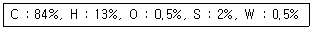
- 약 8600 kcal/kg
- 약 1⑤47 kcal/kg
- 약 13606 kcal/kg
- 약 17606 kcal/kg
(정답률: 57%)
10. 배기가스 질소산화물 제거방법 중 건식법에서 사용되는 환원제가 아닌 것은?
- 질소가스
- 암모니아
- 탄화수소
- 일산화탄소
(정답률: 53%)
11. 과잉 공기가 너무 많을 때 발생하는 현상으로 옳은 것은?
- 이산화탄소 비율이 많아진다.
- 연소 온도가 높아진다.
- 보일러 효율이 높아진다.
- 배기가스의 열손실이 많아진다.
(정답률: 76%)
12. 로터리 버너(rotary burner)로 벙커 C유를 연소시킬 때 분무가 잘 되게 하기 위한 조치로서 가장 거리가 먼 것은?
- 점도를 낮추기 위하여 중유를 예열한다.
- 중유 중의 수분을 분리, 제거한다.
- 버너 입구 배관부에 스크레이너를 설치한다.
- 버너 입구의 오일 압력을 100kPa 이상으로 한다.
(정답률: 68%)
13. 다음 중 습식법과 건식법 배기가스 탈황설비에서 모두 사용할 수 있는 흡수제는?
- 수산화나트륨
- 마그네시아
- 아황산칼륨
- 활성산화망간
(정답률: 57%)
14. 액체연료의 유동점은 응고점보다 몇 ℃ 높은가?
- 1.5℃
- 2.0℃
- 2.5℃
- 3.0℃
(정답률: 72%)
15. 가연성 혼합기의 공기비가 1.0 일 때 당량비는?
- 0
- 0.5
- 1.0
- 1.5
(정답률: 76%)
16. 수분이나 회분을 많이 함유한 저품위 탄을 사용할 수 있으며 구조가 간단하고 소요동력이 적게 드는 연소장치는?
- 슬래그탭식
- 클레이머식
- 사이클로식
- 각우식
(정답률: 65%)
17. 다음 각 성분의 조성을 나타낸 식 중에서 틀린 것은? (단, m : 공기비, Lo : 이론공기량, G : 가스량, Go : 이론 건연소 가스량이다.)
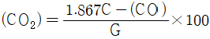
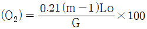
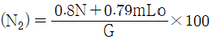
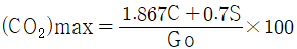
(정답률: 60%)
18. 집진장치에 대한 설명으로 틀린 것은?
- 전기 집진기는 방전극을 음(陰), 집진극을 양(陽)으로 한다.
- 전지집진은 콜롱(coulomb)력에 의해 포집된다.
- 소형 사이클론을 직렬시킨 원심력 분리장치를 멀티 스크러버(multi-scrubber)라 한다.
- 여과 집진기는 함진 가스를 여과재에 통과시키면서 입자를 분리하는 장치이다.
(정답률: 72%)
19. 고체연료에 비해 액체연료의 장점에 대한 설명으로 틀린 것은?
- 화재, 역화 등의 위험이 적다.
- 회분이 거의 없다.
- 연소효율 및 열효율이 좋다.
- 저장운반이 용이하다.
(정답률: 67%)
20. 고위발열량과 저위발열량의 차이는 어떤 성분과 관련이 있는가?
- 황
- 탄소
- 질소
- 수소
(정답률: 71%)
2과목: 열역학
21. 온도 127℃에서 포화수 엔탈피 560kJ/kg, 포화증기의 엔탈피는 2720kJ/kg 일 때 포화수 1kg이 포화증기로 변화하는데 따르는 엔트로피의 증가는 몇 kJ/kgㆍK인가?
- 1.4
- 5.4
- 6.8
- 21.4
(정답률: 61%)
22. 다음 중 온도에 따라 증가하지 않는 것은?
- 증발잠열
- 포화액의 내부 에너지
- 포화증기의 엔탈피
- 포화액의 엔트로피
(정답률: 58%)
23. 다음 중 표준냉동사이클에서 냉동능력이 가장 좋은 냉매는?
- 암모니아
- R-12
- R-22
- R-113
(정답률: 75%)
24. 압력 500kpa, 온도 240℃인 과열증기와 압력 500kpa의 포화수가 정상상태로 흘러 들어와 섞인 후 같은 압력의 포화증기 상태로 흘러나간다. 1kg의 과열증기에 대하여 필요한 초화수의 양을 구하면 약 몇 kg인가? (단, 과열증기의 엔탈피는 3063kJ/kg이고, 포화수의 엔탈피는 636kJ/kg, 증발열은 2109kJ이다.)
- 0.15
- 0.45
- 1.12
- 1.45
(정답률: 26%)
25. 공기가 표준대기압 하에 있을 때 산소의 분압은 몇 kPa인가?
- 1.0
- 21.3
- 80.0
- 101.3
(정답률: 56%)
26. 증기에 대한 설명 중 틀린 것은?
- 동일압력에서 포화수보다 포화증기는 온도가 높다.
- 동일압력에서 건포화 증기를 가열한 것이 과열증기이다.
- 동일압력에서 과열증기는 건포화 증기보다 온도가 높다.
- 동일압력에서 습포화 증기와 건포화 증기는 온도가 같다.
(정답률: 56%)
27. 일정한 압력 300kPa로 체적 0.5m3의 공기가 외부로부터 160kJ의 열을 받아 그 체적이 0.8m3로 팽창하였다. 내부에너지 증가는 얼마인가?
- 30kJ
- 70kJ
- 90kJ
- 160kJ
(정답률: 55%)
28. 이상기체에 대한 설명 중 틀린 것은?
- 분자와 분자 사이의 거리가 매우 멀다.
- 분자 사아의 인력이 없다.
- 압축성인자가 1이다.
- 내부에너지는 온도와 무관하고 압력과 부피의 함수로 이루어진다.
(정답률: 67%)
29. 밀도가 800kg/m3인 액체와 비체적이 0.0015m3/kg인 액체를 질량비 1:1로 잘 섞으면 혼합액의 밀도는 몇 kg/m3인가?
- 721
- 727
- 733
- 739
(정답률: 56%)
30. 시량적 성질(extensive property)에 해당하는 것은?
- 체적
- 조성
- 압력
- 절대온도
(정답률: 69%)
31. 출력 50kW의 가솔린 엔진이 매시간 10kg의 가솔린을 소모한다. 이 엔진의 효율은? (단, 가솔린의 발열량은 42000kJ/kg이다.)
- 21%
- 32%
- 43%
- 60%
(정답률: 54%)
32. 동일한 온도, 압력 포화수 1kg과 포화증기 4kg을 혼합하였을 때 이 증기의 건도는?
- 20%
- 25%
- 75%
- 80%
(정답률: 54%)
33. 냉동사이클에서 냉매의 구비조건으로 가장 거리가 먼 것은?
- 임계온도가 높을 것
- 증발열이 클 것
- 인화 및 폭발의 위험성이 낮을 것
- 저온, 저압에서 응축이 되지 않을 것
(정답률: 65%)
34. 열역학 제2법칙을 설명한 것이 아닌 것은?
- 사이클로 작동하면서 하나의 열원으로부터 열을 받아서 이 열을 전부 일로 바꾸는 것은 불가능하다.
- 에너지는 한 형태에서 다만 다른 형태로 바뀔 뿐이다.
- 제2종 영구기관을 만든다는 것은 불가능하다.
- 주위에 아무런 변화를 남기지 않고 열을 저온의 열원으로부터 고온의 열원으로 전달하는 것은 불가능하다.
(정답률: 72%)
35. 카르노사이클의 효율은 무엇에만 의존하는가?
- 두 열저장조(heat reservoir)의 온도
- 저온부의 온도
- 카르노 사이클에 사용되는 작동유체
- 고온부의 온도
(정답률: 72%)
36. 체적 500L인 탱크가 300℃로 보온되었고, 이 탱크 속에는 25kg의 습증기가 들어있다. 이 증기의 건도를 구한값은? (단, 증기표의 값은 300℃인 온도 기준일 때 v'=0.0014036m3/kg, v"=0.02163m3/kg이다.)
- 62%
- 72%
- 82%
- 92%
(정답률: 36%)
37. 랭킨 사이클에서 압력 및 온도의 영향에 대한 설명으로 틀린 것은?
- 응축기 압력이 낮아지면 배출열량은 적어지고 열효율은 증가한다.
- 배기온도를 낮추면 터빈을 떠나는 습증기의 건도가 증가한다.
- 보일러 압력이 높아지면 열효율이 증가한다.
- 주어진 압력에서 과열도가 높을수록 출력이 증가하여 열효율이 증가한다.
(정답률: 50%)
38. 다음 중 가스의 액화과정과 가장 관계가 먼 것은?
- 압축과정
- 등압냉각과정
- 최종상태는 압축액 또는 포화혼합물 상태
- 등온팽창과정
(정답률: 69%)
39. 가스터빈에 대한 이상적인 공기 표준사이클로서 정압연소 사이클이라고도 하는 것은?
- Stirling 사이클
- Ericsson 사이클
- Diesel 사이클
- Brayton 사이클
(정답률: 68%)
40. PVn=일정인 과정에서 밀폐계가 하는 일을 나타낸 식은?
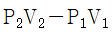
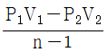
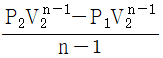
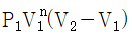
(정답률: 64%)
3과목: 계측방법
41. 가스 크로마토그래피법에서 사용하는 검출기 중 수소염 이온화검출기를 의미하는 것은?
- ECD
- FID
- HCD
- FTD
(정답률: 78%)
42. 피토관(pitot tube)의 사용 시 주의사항으로 틀린 것은?
- 5m/s 이하의 기체에는 부적당하다.
- 더스트(dust), 미스트(most) 등이 많은 유체에 적합하다.
- 피토관의 헤드부분은 유동방향에 대해 평행하게 부착한다.
- 흐름에 대해 충분한 강도를 가져야 한다.
(정답률: 66%)
43. 열전대(thermo couple)는 어떤 원리를 이용한 온도계인가?
- 열팽창율 차
- 전위차
- 압력 차
- 전기저항 차
(정답률: 73%)
44. 열전대 온도계가 구비해야 할 사항에 대한 설명으로 틀린 것은?
- 주위의 고온체로부터 복사열의 영향으로 인한 오차가 생기지 않도록 주의해야 한다.
- 보호관 선택 및 유지관리에 주의한다.
- 열전대는 측정하고자 하는 곳에 정확히 삽입하여 삽입한 구멍을 통하여 냉기가 들어가지 않게 한다.
- 단자의 (+), (-)와 보상도선의 (-), (+)를 결선해야 한다.
(정답률: 78%)
45. 다음 중 직접식 액위계에 해당하는 것은?
- 플로트식
- 초음파식
- 방사선식
- 정전용량식
(정답률: 81%)
46. 벤트리미터(venturi meter)의 특성으로 옳은 것은?
- 오리피스에 비해 가격이 저렴하다.
- 오리피스에 비해 공간을 적게 차지한다.
- 압력손실이 적고 측정 정도가 높다.
- 파이프와 목부분의 지름비를 변화시킬 수 있다.
(정답률: 70%)
47. 색온도계의 특징이 아닌 것은?
- 방사율의 영향이 크다.
- 광흡수에 영향이 적다.
- 응답이 빠르다.
- 구조가 복잡하며 주위로부터 빛 반사의 영향을 받는다.
(정답률: 54%)
48. 전기 저항식 온도계 중 백금(Pt) 측온 저항체에 대한 설명으로 틀린 것은?
- 0℃에서 500Ω을 표준으로 한다.
- 측정온도는 최고 약 500℃ 정도이다.
- 저항온도계수는 작으나 안정성이 좋다.
- 온도 측정 시 시간 지연의 결점이 있다.
(정답률: 71%)
49. 방사온도계의 특징에 대한 설명으로 틀린 것은?
- 방사율에 대한 보정량이 크다.
- 측정거리에 따라 오차발생이 적다.
- 발신기의 온도가 상승하지 않게 필요에 따라 냉각한다.
- 노벽과의 사이에 수증기, 탄산가스 등이 있으면 오차가 생기므로 주의해야 한다.
(정답률: 62%)
50. 다음 압력계 정도가 가장 높은 것은?
- 경사관식
- 부르돈관식
- 다이어램식
- 링밸런스식
(정답률: 68%)
51. 점성계수 μ=0.85 poise, 밀도 ρ=85Nㆍs2/m4인 유체의 동점성계수는?
- 1m2/s
- 0.1m2/s
- 0.01m2/s
- 0.001m2/s
(정답률: 43%)
52. 가스의 자기성(紫氣性)을 이용한 분석계는?
- CO2계
- SO2계
- O2계
- 가스 크로마토그래피
(정답률: 73%)
53. 다음 중 자동조작 장치로 쓰이지 않는 것은?
- 전자개폐기
- 안전밸브
- 전동밸브
- 댐퍼
(정답률: 77%)
54. 침종식 압력계에 대한 설명으로 틀린 것은?
- 봉입액은 자주 세정 혹은 교환하여 청정하도록 유지한다.
- 압력 취출구에서 압력계까지 배관은 가능한 길게 한다.
- 계기 설치는 똑바로 수평으로 하여야 한다.
- 봉입액의 양은 일정하게 유지해야 한다.
(정답률: 75%)
55. 세라믹식 O2 계의 특징에 대한 설명으로 틀린 것은?
- 측정가스의 유량이나 설치장소 주위의 온도변화에 의한 영향이 적다.
- 연속측정이 가능하며, 측정범위가 넓다.
- 측정부의 온도유지를 위해 온도 조절용 전기로가 필요하다.
- 저농도 가연성 가스의 분석에 적합하고 대기오염관리 등에서 사용된다.
(정답률: 55%)
56. 수분흡수법에 의해 습도를 측정할 때 흡수제로 사용하기에 부적절한 것은?
- 오산화인
- 활성탄
- 실리카겔
- 황산
(정답률: 51%)
57. 배관의 유속을 피토관으로 측정한 결과 마노미터 수주의 높이가 29cm 일 때 유속은?
- 1.69m/s
- 2.38m/s
- 2.947m/s
- 3.42m/s
(정답률: 69%)
58. 2개의 제어계를 조합하여 1차 제어장치의 제어량을 측정하여 제어명령을 발하고 2차 제어장치의 목표치로 설정하는 제어방식은?
- 정치제어
- 추치제어
- 캐스케이드제어
- 피트백제어
(정답률: 81%)
59. 시료 가스 중의 CO2, 탄화수소, 산소, CO 및 질소성분을 분석할 수 있는 방법으로 흡수법 및 연소법의 조합인 분석법은?
- 분젠-실링(Bunsen schiling)법
- 헴펠(Hempel)t식 분석법
- 정커스(Junkers)식 분석법
- 오르자트(Orsat) 분석법
(정답률: 69%)
60. 출력측의 신호를 입력측에 되돌려 비교하는 제어방법은?
- 인터록(inter lock)
- 시퀸스(sequence)
- 피드백(feed back)
- 리셋(reset)
(정답률: 81%)
4과목: 열설비재료 및 관계법규
61. 연료를 사용하지 않고 용선의 보유열과 용선속의 불순물의 산화열에 의해서 노내 온도를 유지하며 용강을 얻는 것은?
- 평로
- 고로
- 반사로
- 전로
(정답률: 65%)
62. 내화물 SK-26번이면 용융온도 1580℃에 경디어야 한다. SK-30번이라면 약 몇 ℃에 견디어야 하는가?
- 1460℃
- 1670℃
- 1780℃
- 1800℃
(정답률: 74%)
63. 인정검사대상기기 조종자(에머지관리공단에서 검사대상기기 조정에 관한 교육이수자)가 조정할 수 없는 검사대상 기기는?
- 압력용기
- 열매체를 가열하는 보일러로서 용량이 581.5kW 이하인 것
- 온수를 발생하는 보일러로서 용량이 581.5kW 이하인 것
- 증기보일러로서 최고사용압력이 2MPa이하이고, 전열 면적이 5m2 이하인 것
(정답률: 75%)
64. 경화 건조 후 부피비중이 가장 큰 캐스터블 내화물은?
- 점토질
- 고알루미나질
- 크롬질
- 내화단열질
(정답률: 61%)
65. 원관을 흐르는 층류에 있어서 유량의 변화는?
- 관의 반지름의 제곱에 비례해서 증가한다.
- 압력강화에 반비례하여 증가한다.
- 관의 길이에 비례하여 증가한다.
- 점성계수에 반비례해서 증가한다.
(정답률: 43%)
66. 제강 평로에서 채용되고 있는 배열회수 방법으로서 배기가스의 현열을 흡수하여 공기나 연료가스 예열에 이용될 수 있도록 한 장치는?
- 축열실
- 환열실
- 폐열 보일러
- 판형 열교환기
(정답률: 73%)
67. 제조업자 등이 광고매체를 이용하여 효율관리기자재의 광고를 하는 경우에 그 광고내용에 포함시켜야 할 사항인 것은?
- 에너지 최저효율
- 에너지 사용량
- 에너지 소비효율
- 에너지 평균소비량
(정답률: 77%)
68. 다음 중 연속가열로의 종류가 아닌 것은?
- 푸셔(pusher)식 가열로
- 워킹-빔(worling beam)식 가열로
- 대차식 가열로
- 회전로상식 가열로
(정답률: 68%)
69. 용접검사가 면제되는 대상기기가 아닌 것은?
- 용접이음이 없는 강관을 동체로 한 헤더
- 최고사용압력이 0.35MPa 이하이고, 동체의 안지름이 600mm인 전열교환식 1종 압력용기
- 전열면적이 30m2이하의 유류용 주철제 증기보일러
- 전열면적이 18m2이하이고, 최고사용압력이 0.35MPa인 온수보일러
(정답률: 56%)
70. 보온재의 열전도율에 대한 설명으로 틀린 것은?
- 재료의 두께가 두꺼울수록 열전도율이 작아진다.
- 재료의 밀도가 클수록 열전도율이 작아진다.
- 재료의 온도가 낮을수록 열전도율이 작아진다.
- 재질내 수분이 작을수록 열전도율이 작아진다.
(정답률: 73%)
71. 검사대상기기 조정자는 선임된 날부터 얼마이내에 교육을 받아야 하는가?
- 1개월
- 3개월
- 6개월
- 1년
(정답률: 63%)
72. 에너지 사용계획을 수립하여 산업통상자원부 장관에게 제출하여야 하는 공공사업주관자에 해당하는 시설규모는?
- 연간 1천 티오이 이상의 연료 및 열을 사용하는 시설
- 연간 2천 티오이 이상의 연료 및 열을 사용하는 시설
- 연간 2천5백 티오이 이상의 연료 및 열을 사용하는 시설
- 연간 1만 티오이 이상의 연료 및 열을 사용하는 시설
(정답률: 53%)
73. 냉난방온도의 제한온도 기준 중 냉난방온도 제한건물(판매시설 및 공항은 제외)의 냉방제한온도는?
- 18℃이하
- 20℃이상
- 22℃이하
- 26℃이상
(정답률: 75%)
74. 파이프의 축 방향 응력(σ)을 나타낸 식은? (단, D는 파이프의 내경[mm], p는 원통의 내압[kg/cm2], σ는 축방향 응력[kg/mm2], t는 파이프의 두께[mm]이다.)
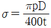
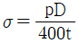
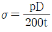
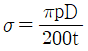
(정답률: 60%)
75. 에너지사용계획에 대한 검토결과 공공사업 주관자가 조치요청을 받은 경우, 이를 이행하기 위하여 제출하는 이행계획에 포함되어야 할 내용이 아닌 것은?
- 이행주체
- 이행방법
- 이행장소
- 이행시기
(정답률: 72%)
76. 검사대상기기 중 검사에 불합격된 검사대상기기를 사용한 자의 벌칙규정은?
- 5백만원 이하의 벌금
- 1년 이하의 징역 또는 1천만원 이하의 벌금
- 2년 이하의 징역 또는 2천만원 이하의 벌금
- 3천만원 이하의 벌금
(정답률: 75%)
77. 검사대상기기 조종자를 해임한 경우 에너지관리공단 이사장에게 신고는 신고 사유가 발생한 날부터 며칠 이내에 하여야 하는가?
- 7일
- 10일
- 20일
- 30일
(정답률: 69%)
78. 에너지와 관련된 용어의 정의에 대한 설명으로 틀린 것은?
- 에너지라 함은 연료, 열 및 전기를 말한다.
- 연료라 함은 석유, 가스, 석탄, 그 밖에 열을 발생하는 열원을 말한다.
- 에너지사용자라 함은 에너지를 전환하여 사용하는 자를 말한다.
- 에너지사용기자재라 함은 열사용기자재나 그 밖에 에너지를 사용하는 기자재를 말한다.
(정답률: 77%)
79. 회전 가마(rotary kiln)에 대한 설명으로 틀린 것은?
- 일반적으로 시멘트, 석회석 등의 소성에 사용된다.
- 온도에 따라 소성대, 가소대, 예열대, 건조기 등으로 구분된다.
- 소성대에는 황산염이 함유된 클링커가 용융되어 내화벽돌을 침식시킨다.
- 시멘트 클링커의 제조방법에 따라 건식법, 습식법, 반건식법으로 분류된다.
(정답률: 65%)
80. 고온용 무기질 보온재로서 석영을 녹여 만들며, 내약품성이 뛰어나고, 최고사용온도가 1100℃ 정도인 것은?
- 유리섬유(glass wool)
- 석면(asvestos)
- 펄라이트(pearlite)
- 세라믹 화이버(ceramic fiber)
(정답률: 69%)
5과목: 열설비설계
81. 다음 중 보일러의 탈산소재로 사용되지 않는 것은?
- 아황산나트륨
- 히드라진
- 탄닌
- 수산화나트륨
(정답률: 59%)
82. 보일러의 부속장치 중 여열장치가 아닌 것은?
- 공기예열기
- 송풍기
- 재열기
- 절탄기
(정답률: 79%)
83. 내화물의 기계적 성질이 아닌 것은?
- 압축강도
- 용적변화
- 탄성율
- 인장강도
(정답률: 69%)
84. 보일러수에 녹아있는 기체를 제거하는 탈기기(脫氣機)가 제거하는 대표적인 용존가스는?
- O2
- H2SO4
- H2S
- SO2
(정답률: 77%)
85. 분리하는 방식에 따라 구분되는 집진장치의 종류가 아닌 것은?
- 건식
- 습식
- 전기식
- 전자식
(정답률: 81%)
86. 피복 아크용접에서 루트의 간격이 크게 되었을 때 보수하는 방법으로 틀린 것은?
- 맞대기 이음에서 간격이 6mm 이하일 때에는 이음부의 한 쪽 또는 양쪽에 덧붙이를 하고 깍아내어 간격을 맞춘다.
- 맞대기 이음에서 간격이 16mm이상일 때에는 판의 전부 혹은 일부를 바꾼다.
- 필렛 용접에서 간격이 1.5~4.5mm 일 때에는 그대로 용접해도 좋지만 벌어진 간격만큼 각장을 작게한다.
- 필렛 용접에서 간격이 1.5mm 이하일 때에는 그대로 용접한다.
(정답률: 64%)
87. 두께 10mm의 강판으로 내경 1000mm인 원통을 만들면 최대 어느 압력까지 사용할 수 있는가? (단, 허용인장응력 7kgf/mm2, 이음효율은 70%fh 한다.)
- 7.6kgf/cm2
- 8.3kgf/cm2
- 9.8kgf/cm2
- 10.5kgf/cm2
(정답률: 43%)
88. 직경 200mm 철관을 이용하여 매분 1500ℓ의 물을 흘려보낼 때 철관 내의 유속은?
- 0.595m/s
- 0.79m/s
- 0.99m/s
- 1.19m/s
(정답률: 55%)
89. 용접에서 발생한 잔류응력을 제거하기 위한 열처리는?
- 뜨임(tempering)
- 풀림(annealing)
- 담금질(quenching)
- 불림(normalizing)
(정답률: 81%)
90. 강관의 두께가 10mm이고 리벳의 직경이 16.8mm이며 리벳 구멍의 피치가 60.2mm의 1줄 겹치기 리벳조인트가 있을 때 이 강판의 효율은?
- 58%
- 62%
- 68%
- 72%
(정답률: 36%)
91. 두께 20cm의 벽돌의 내측에 10mm의 모르타르와 5mm의 플라스터 마무리를 시행하고, 외측은 두께 15mm의 모르타르 마무리를 시공한 다층벽의 열관류율은? (단, 실내측벽 표면의 열전달율은 λ1=8kcal/m2ㆍhㆍ℃, 실외측벽 표면의 열전도율은 λ2=20kcal/m2ㆍhㆍ℃, 플라스터의 열전도율은 λ3=0.5kcal/m2ㆍhㆍ℃, 모르타르의 열전도율은 λ4=1.3kcal/m2ㆍhㆍ℃, 벽돌의 열전도율은 λ5=0.65kcal/m2ㆍhㆍ℃이다.)
- 1.9kcal/m2ㆍhㆍ℃
- 4.5kcal/m2ㆍhㆍ℃
- 8.7kcal/m2ㆍhㆍ℃
- 12.1kcal/m2ㆍhㆍ℃
(정답률: 32%)
92. 보일러 연소 시 그을음의 발생 원인이 아닌 것은?
- 통풍력이 부족한 경우
- 연소실의 온도가 낮은 경우
- 연소장치가 불량인 경우
- 연소실의 면적이 큰 경우
(정답률: 75%)
93. 관 스테이의 최소 단면적을 구하려고 한다. 이 때 적용하는 설계 계산식은? (단, S : 관스테이의 최소 단면적(mm2), A : 1개의 관 스테이가 지지하는 면적(cm2), a : A중에서 관 구멍의 합계 면적(cm2), P : 최고 사용 압력(kgf/cm2)이다.)
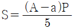
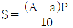
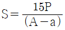
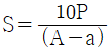
(정답률: 64%)
94. 두께 150mm인 적벽돌과 100mm인 단열벽돌로 구성되어 있는 내화벽돌의 노벽이 있다. 이것의 열전도율은 각각 1.2kcal/m2ㆍhㆍ℃, 0.06kcal/m2ㆍhㆍ℃이다. 이 때 손실열량은? (단, 노내 벽면의 온도는 800℃이고 외벽면의 온도는 100℃이다.)
- 289kcal/m2ㆍhㆍ℃
- 390kcal/m2ㆍhㆍ℃
- 5⑤kcal/m2ㆍhㆍ℃
- 635kcal/m2ㆍhㆍ℃
(정답률: 51%)
95. 급수처리에 있어서 양질의 급수를 얻을 수 있으나 비요이 많이 들어 보급수의 양이 적은 보일러 또는 선박보일러에서 해수로부터 청수를 얻고자 할 때 주로 사용하는 급수처리 방법은?
- 증류법
- 여과법
- 석회소오다법
- 이온교환법
(정답률: 75%)
96. 보일러 급수 중에 함유되어 있는 칼슘(Ca) 및 마그네슘(Mg)의 농도를 나타내는 척도는?
- 탁도
- 경도
- BOD
- pH
(정답률: 77%)
97. 증기압력 1.2kg/cm2의 포화증기(포화온도 104.25℃, 증발잠열 536.1kal/kg)를 내경 52.9mm, 길이 520m인 강관을 통해 이송하고자 할 때 트랩 선정에 필요한 응축 수량은? (단, 외부온도 0℃, 강관 총중량 300kg, 강관비열 0.11kcal/kgㆍ℃이다.)
- 4.4kg
- 6.4kg
- 8.4kg
- 10.4kg
(정답률: 38%)
98. 관판의 두께가 10mm이고 관 구멍의 직경이 30mm인 연관보일러의 연관의 최소피치는?
- 약 37.2mm
- 약 43.5mm
- 약 53.2mm
- 약 64.9mm
(정답률: 51%)
99. 파이프의 내경 D(mm)를 유량 Q(m3/s)와 평균속도 V(m/s)로 표시한 식으로 옳은 것은?
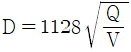
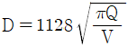
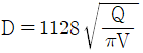
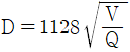
(정답률: 61%)
100. 압력용기의 설치상태에 대한 설명으로 틀린 것은?
- 압력용기는 1개소 이상 접지되어야 한다.
- 압력용기는 화상 위험이 있는 고온배관은 보온되어야 한다.
- 압력용기는 기초는 약하여 내려앉거나 갈라짐이 없어야 한다.
- 압력용기의 본체는 바닥에서 30mm이상 높이 설치되어야 한다.
(정답률: 75%)